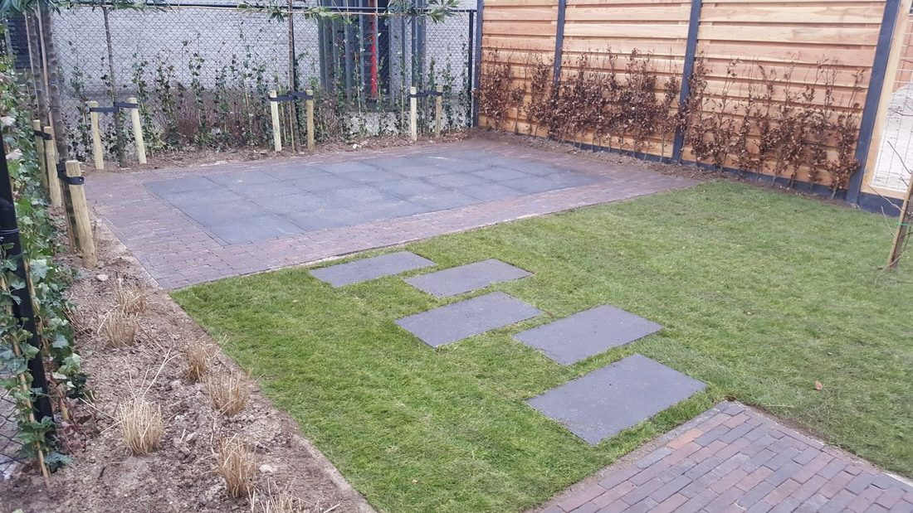
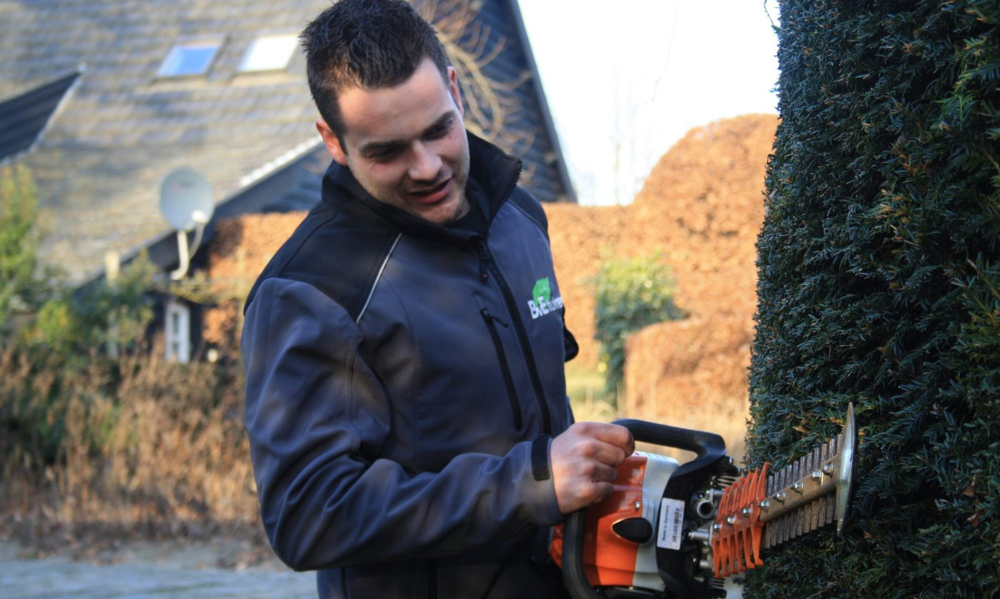
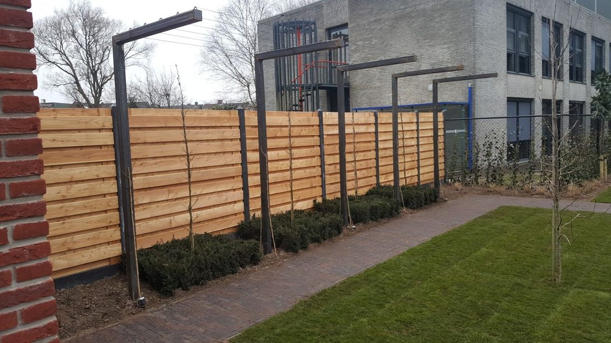
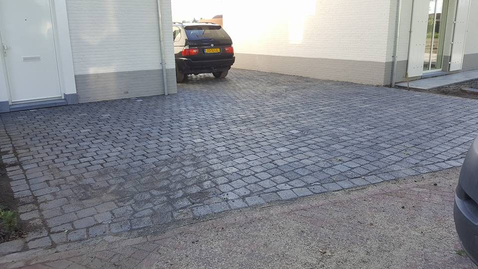
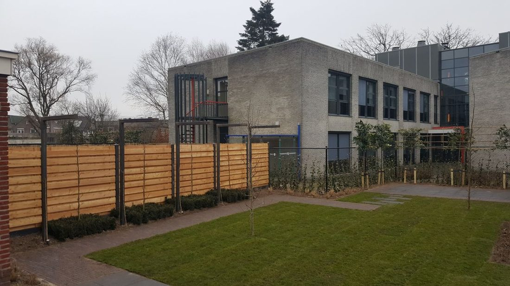
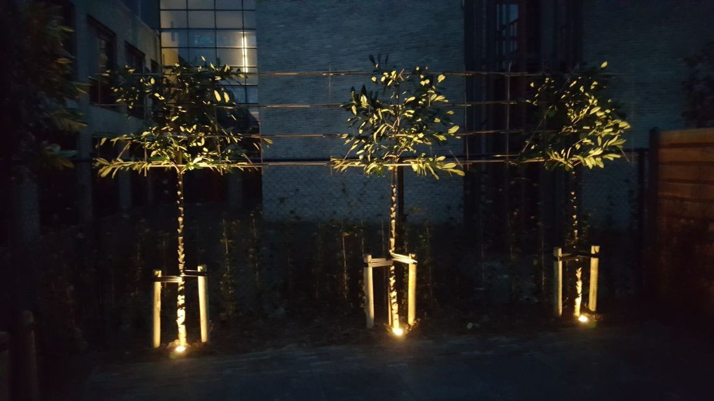
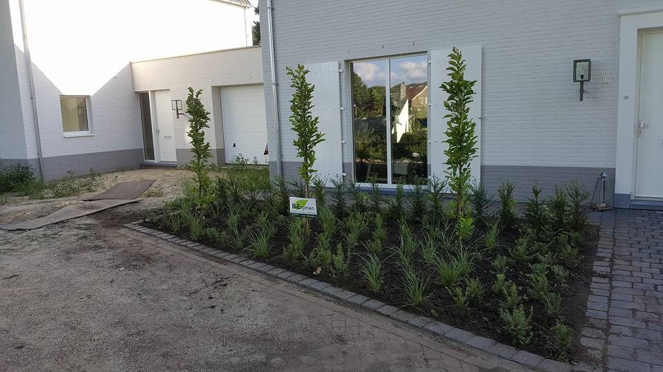
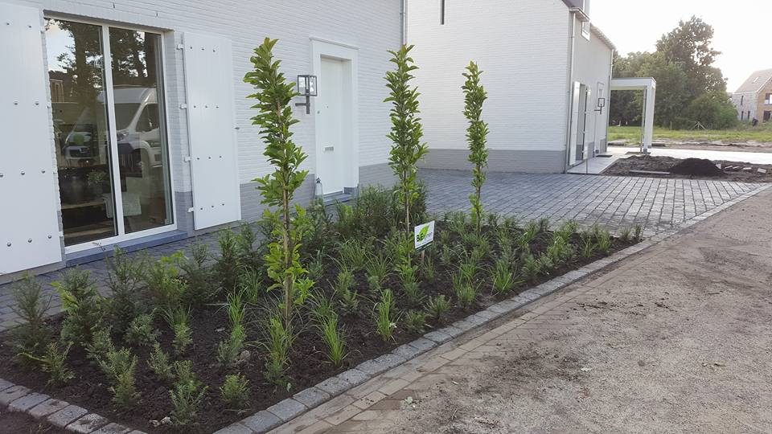

Tuinontwerp
Een ontwerp dat past bij uw huis en bij u als persoon, gezin of bedrijf.
Samen tot een planMeer info

Ontwerp, aanleg en onderhoud in Zundert, Breda en omgeving. We denken graag met u mee: van een tuin met weinig onderhoud tot een pergola, tuinverlichting of nieuwe bestrating.
Vriendelijke jongen die weet wat hard werken en resultaat leveren is!Douwe Slagter, liet zijn achtertuin aanleggen
Eerst een vrijblijvend gesprek over uw wensen en tuinstijl, daarna een offerte. U heeft één aanspreekpunt voor de hele tuin.

Een ontwerp dat past bij uw huis en bij u als persoon, gezin of bedrijf.

De complete aanleg: van grondwerk en beplanting tot schutting, vijver en verlichting.

Opritten en terrassen, met gebakken klinkers, koperslakken of grote tegels.
Ook voor: pergola's, schuttingen en hekwerk, tuinverlichting, beregening, vijvers en plantenbakken.
Is uw gazon aan vervanging toe, of is het oppervlak te groot voor graszoden? We zaaien in met een minitractor met zaaimachine, voor de juiste zaaidiepte en hoeveelheid.
Waar nodig verwijderen of frezen we het huidige gazon.
Alles egaal, zodat het water goed wegloopt.
Graszaad in overleg: siergazon, sportgazon of dierenweide.
Met de juiste hoeveelheid water kiemt het gras snel.
Zaaien of graszoden? Dat verschilt per tuin. We komen graag vrijblijvend kijken.
Offerte aanvragenGeen tijd, kennis of gereedschap voor het onderhoud? Dan nemen wij het over, zodat uw tuin er het hele jaar goed bij ligt.
Heeft u een bedrijfstuin? In een vrijblijvend gesprek leggen we samen uw verwachtingen en het gewenste kwaliteitsniveau vast. Dat vertalen we naar een onderhoudscontract dat bij u past.
Het doel: een langdurige samenwerking, met een terrein dat er altijd verzorgd bij ligt.
Offerte aanvragenTwee tuinen die we van begin tot eind hebben verzorgd.


In januari 2018 opgeleverd, van tuinontwerp tot tuinaanleg compleet verzorgd. Een gevarieerde tuin met pergola, tuinverlichting, staptegels, gebakken klinkers en 60 x 60 tegels.


De complete oprit bestraat met koperslakken en de voortuin aangeplant met zuilmagnolia's, een taxushaag en hortensia 'Strong Annabelle'. Achter het huis gebakken betonklinkers.
Zeer tevreden over het werk van Bert. We zochten iemand die onze achter tuin volledig wilde aanleggen en zijn erg blij dat we bij Bert terecht gekomen zijn. Vriendelijke jongen die weet wat hard werken en resultaat leveren is!
Wij zijn super tevreden over Bert van BvE tuinen, een harde werker die zijn vak serieus en met plezier doet. Gaan in de toekomst zeker weer gebruik maken van zijn diensten, hij heeft heel snel van onze oerwoudtuin weer een plaatje gemaakt, TOP!
Ik ben pas tevreden als u het ook bent!Bert van Exsel, eigenaar
BvE Tuinen is het hoveniersbedrijf van Bert van Exsel uit Zundert. Bert begon op zijn dertiende met een opleiding tuinbouw in Hoogstraten en specialiseerde zich daarna vier jaar in het hoveniersvak. Daarnaast werkte hij acht jaar in een boomkwekerij.
Daardoor weet hij veel van bomen en planten, en kiest hij beplanting die echt bij uw tuin past. Sinds 2016 doet hij dat met zijn eigen bedrijf, met tijd en persoonlijke aandacht voor elke klant.
Vertel kort wat u wilt met uw tuin. We komen graag vrijblijvend langs om de situatie te bekijken.
Bel of app Bert, dan plannen we direct een moment.
Werkgebied: Zundert, Breda, Etten-Leur, Roosendaal, gemeente Rucphen, Dorst en Oosterhout.